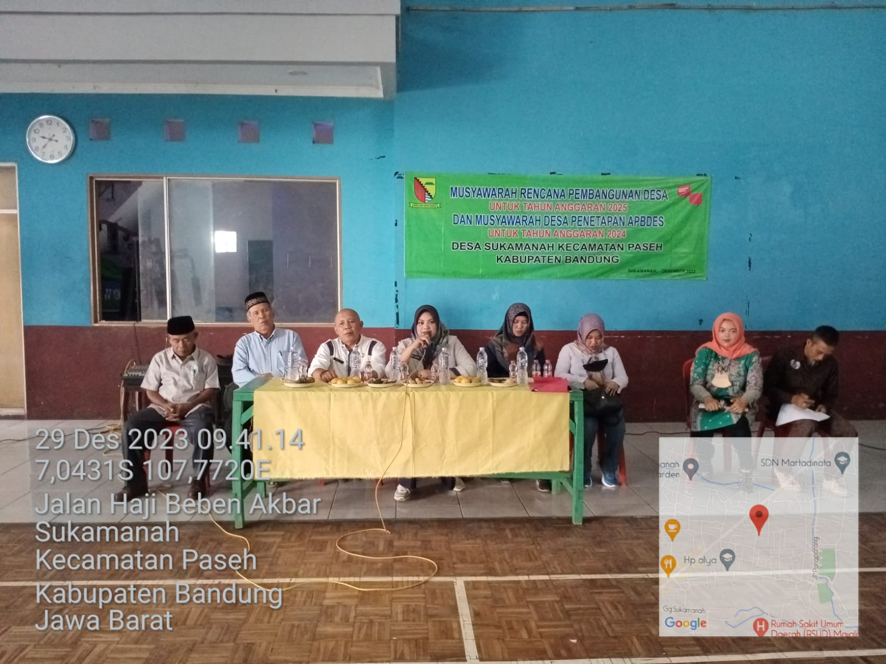
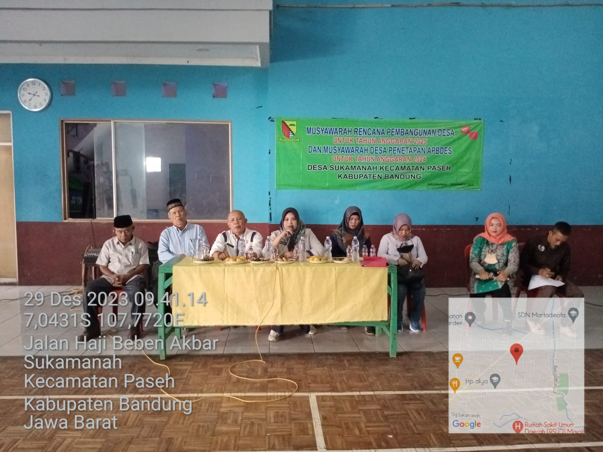

Beranda
Selamat datang di website resmi Kelompok Informasi Masyarakat (KIM) Kahening Desa Sukamanah. Di sini Anda bisa mendapatkan informasi terbaru seputar kegiatan dan perkembangan di desa kami.
Lihat Berita Terbaru →Berita
Pemberdayaan UMKM Desa Melalui Pelatihan Digital Marketing
27 Agustus 2024
Paseh, 27 Agustus 2024 - Kelompok Informasi Masyarakat (KIM) Kahening hari ini menyelenggarakan pelatihan digital marketing untuk pelaku Usaha Mikro, Kecil, dan Menengah (UMKM) di Desa Sukamanah...
Panen Raya Bersama Petani Desa Sukamanah
25 Agustus 2024
Kegiatan panen raya berjalan sukses, dihadiri oleh kepala desa dan seluruh petani...
Galeri

 

Tentang Kami
Kelompok Informasi Masyarakat (KIM) Kahening adalah sebuah lembaga yang dibentuk untuk menjadi pusat informasi dan komunikasi bagi masyarakat Desa Sukamanah. Kami berdedikasi untuk menyebarkan informasi positif, edukatif, dan membangun, serta menjadi jembatan antara pemerintah desa dan warganya.
Visi Kami
Menjadi pusat informasi yang terpercaya dan proaktif dalam memajukan kesejahteraan masyarakat Desa Sukamanah.
Misi Kami
- Menyediakan informasi yang akurat dan relevan.
- Mengadakan pelatihan dan kegiatan edukatif.
- Mendorong partisipasi aktif masyarakat dalam pembangunan.
Komentar
Hubungi Kami
E-mail: kim.kahening@email.com
Telp: 0812-3456-7890
Bapak Ujang
27 Agustus 2024
Pelatihan ini sangat bermanfaat bagi para pelaku UMKM, semoga terus berlanjut!